Help CenterGuides
35 guides · Mac
Illustrated guides.
Short walkthroughs with real screenshots — the same ones built into the app.
Start here
How the Mac app is laid out
What does each part of the Mac app do?
- The sidebar on the left is the whole app. It's grouped by what you're doing — Overview, Money, Planning, Analyze — not by screen name.
- A group with a triangle expands: Budget holds Monthly, Annual and Categories; Net Worth holds Overview, Investments, Accounts and Projection.
- ⌘1 through ⌘9 jump straight to the nine screens you'll use most, without touching the sidebar.
- How-To, Learn and Support are pinned to the bottom of the sidebar, the way Xcode and Music pin theirs.
- It opens on Home each time — or on Budget, Transactions or Net Worth if you pick one of those as your default in Settings (⌘,). It doesn't reopen wherever you happened to stop.
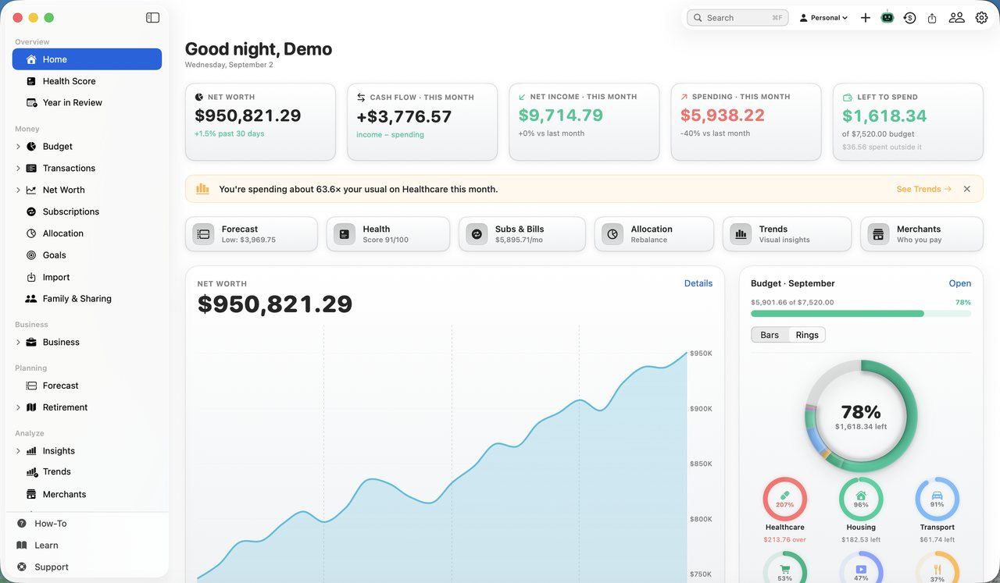
Adding transactions
How do I add a transaction?
- Press ⌘N from anywhere in the app — you don't have to be on Transactions first.
- Fill in the amount, date, category and account, then save.
- Transactions ▸ Ledger is the full list. Click Merchant, Date or Amount to sort by it, and click again to reverse.
- Transactions ▸ Calendar shows the same month as days, which is easier for spotting a heavy week.
- Made a mistake? Double-click any row in the Ledger to edit it.
Budgets — monthly, annual & rings
How do I set a budget I'll actually keep?
- Open Budget ▸ Monthly (⌘2). Each category is a ring: filled is spent, the gap is what's left.
- Budget ▸ Categories is where you add a category and set its limit. Round numbers are fine to start.
- Budget ▸ Annual is for the costs that don't arrive monthly — insurance, registration, a yearly subscription.
- The month selector at the top moves you through history; the rings redraw for whichever month you're looking at.
- ⇧⌘B opens Budget in its own window, so you can keep it beside the Ledger while you categorize.

Import your data
How do I get my existing accounts in?
- Open Import in the sidebar, under Money.
- Drag a CSV straight onto the window, or click Browse Files… to pick one.
- Match your file's columns to date, description, amount and category — the importer guesses, and you correct it.
- Review the preview before committing. Nothing is written until you confirm.
- Import is additive and never wipes what's already there, so a second import of an overlapping file is safe to try.
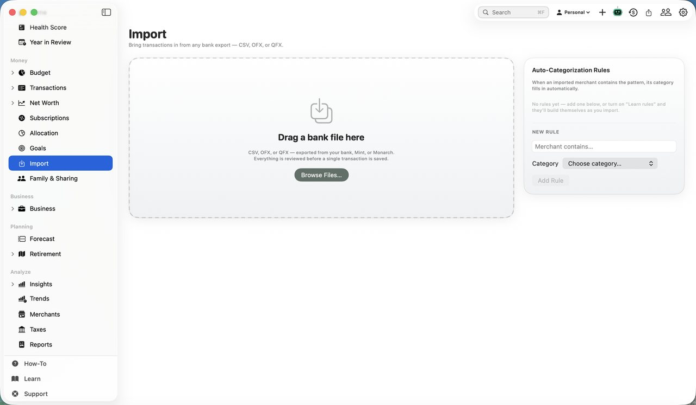
Your financial health score
Am I actually doing all right?
- Open Health Score in the sidebar, under Overview. One number out of 100, with a letter grade beside it.
- It blends five pillars: emergency fund (months of expenses in cash), savings rate (income kept over the last 90 days), debt load (non-mortgage debt against annual income), net worth, and budget adherence.
- The pillars are weighted by impact, so the fastest way up is whichever one is lowest — that is what Do this next lists, in order.
- Every card links to the screen that changes it. Click Open Accounts, Open Forecast or Open Goals to go and act on it rather than reading about it.
- Retirement pace is not scored until you set a birthday and an income in Settings ▸ Profile. Everything is computed on your Mac from data already in the app.
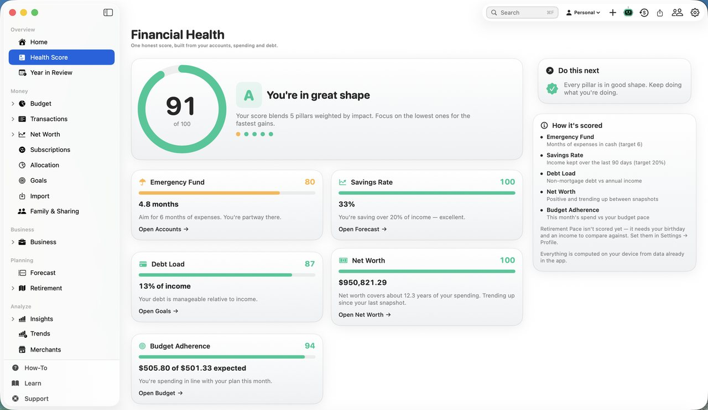
How the app is laid out
What does each part of the app do?
- Home is your dashboard — this month's cash flow, budgets, goals and the year so far, all at a glance.
- Transactions is every bit of money in and out. Budget is what you planned to spend, by category.
- Net Worth totals what you own minus what you owe. Plan is the retirement planner and the calculators.
- The ☰ button top-left opens everything else — goals, bills, reports, settings and this guide.
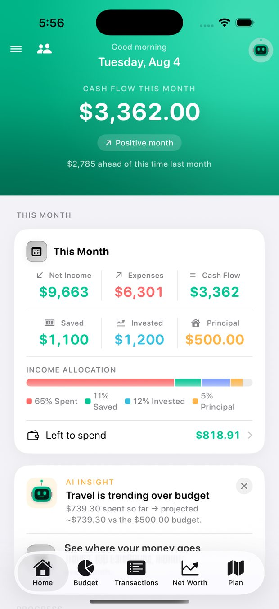
Adding transactions
How do I add a transaction?
- On the Transactions tab, tap the + button in the bottom-right corner.
- Pick Expense, Income or Transfer along the top, then enter the amount, the merchant and a category.
- Attach a receipt while you’re there, or snap one later — it reads the merchant, amount and date for you to approve.
- Splitting a bill? Turn on “Split this bill” and set how many people. Enter the FULL total — only your share is recorded.
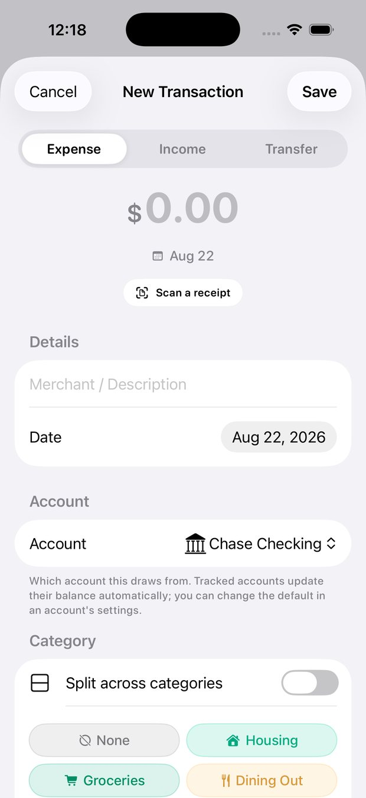
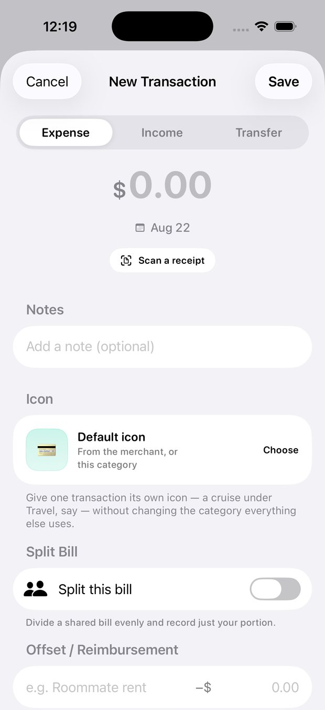
Budgets — monthly, annual & rings
How do I set a budget I’ll actually keep?
- The Budget tab opens on this month. LEFT TO SPEND is the whole screen in one number — your budgets minus what you've spent.
- Tap the month in the title bar for the period picker: Monthly or Annual, any month of any year, and “Customize This Month” for a different amount just this once. The ‹ › arrows step a month at a time — a year at a time in Annual.
- The tiles below the ring are your categories. One over budget turns red and offers Cover, which moves the difference from a category with room to spare rather than pretending the month was fine.
- Tap a tile for that category on its own: what it went on, the merchants, every transaction, and Edit budget right there. Tap an ARC of the ring instead and the ring itself focuses — the middle switches to that category and a strip appears beneath it.
- The small toggle by the ring flips the tiles between bars and rings, and “See all…” opens the full list.
- Set a category's budget when you add or edit it, and give it any color you like. Half of them still unbudgeted? A “Set up your budget” card walks every one and suggests amounts from what you actually spend.
- ANNUAL is the same screen for a whole year — each category against its yearly budget, with income and spending year to date.
- One-Time Expenses live there too: a wedding, a ring, a car. They count in the YEAR's plan and never in a monthly budget, so the month you actually pay doesn't turn red. Any transaction can be tagged to one.

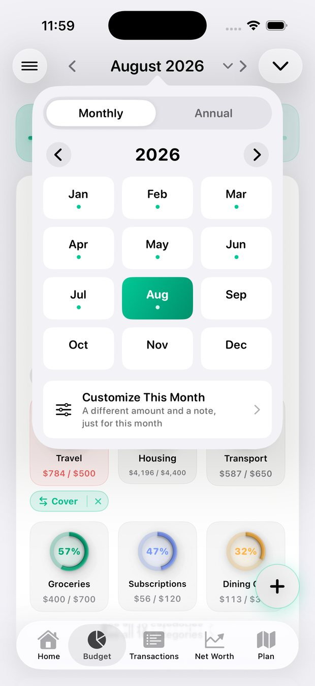
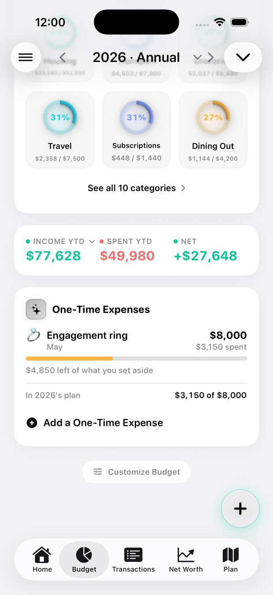
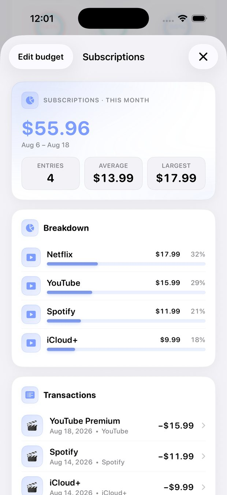
Import your data
How do I get my existing accounts in?
- Open ☰ → Import, or tap + on the Net Worth tab.
- ACCOUNTS & LOANS: type them in, or snap a photo of an account list, balance sheet or spreadsheet — each line is read and classified as a home, car, investment, loan and so on. A CSV (Name, Type, Balance) works too, with a template to copy.
- INVESTMENTS & CRYPTO: holdings, share counts and cost basis.
- TRANSACTIONS: a CSV or OFX/QFX export from your bank.
- PAST YEARS: totals from before you started the app, so the year views go back further.
- Whichever you pick, there are the same three ways in: type it in, snap a PHOTO of a statement, or load a SPREADSHEET.
- Everything is reviewed before it’s saved — nothing is written until you approve the list, and the whole batch can be undone straight after.
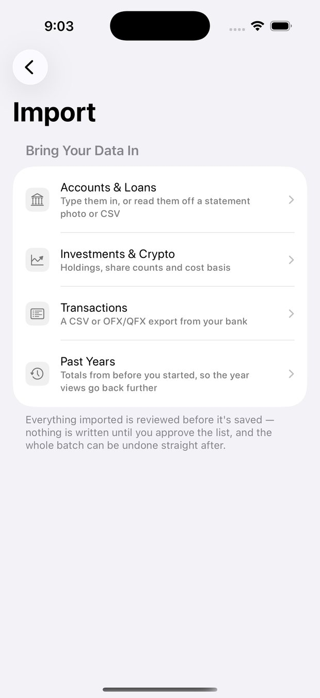
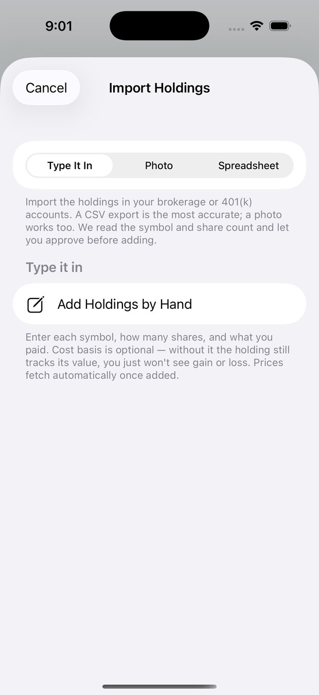
Everyday money
Recurring transactions
How do I handle bills that repeat every month?
- Open Transactions ▸ Recurring.
- Add each bill or paycheck with its amount and how often it repeats.
- Recurring items feed your forecast and your budget, so a bill you haven't paid yet still shows up in what's ahead.
- Auto-posting is opt-in and off by default — turn it on only if you want the app to write the transaction for you.
- Transactions ▸ Rules can categorize incoming transactions automatically by merchant, so you stop re-filing the same coffee shop.

Fin — your money assistant
Can I just ask a question about my money?
- Press ⌘K from anywhere to ask Fin a question.
- Ask about your money — "how much did I spend on groceries last month?" — and Fin answers from your own data.
- Ask about the app — "how do I split a receipt?" — and Fin quotes the steps from this guide.
- Fin runs on your device. Your finances aren't sent anywhere to answer a question.
- When an answer refers to a screen, Fin offers to open it.
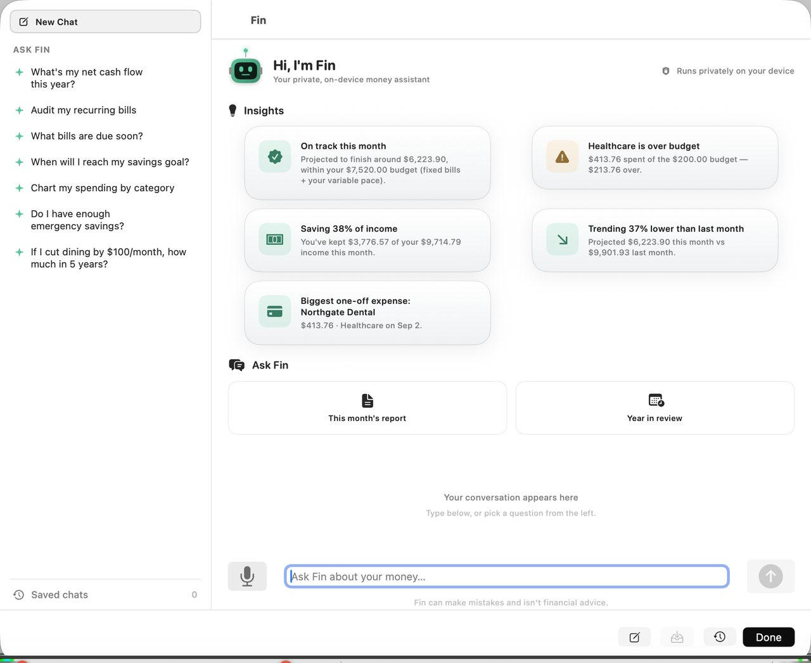
Where your money goes
Where is my money actually going?
- Open Insights ▸ Spending (⌘7) for the breakdown by category.
- Insights ▸ Cash Flow shows money in against money out, month by month.
- Trends compares this month with the months behind it, so a creeping category is visible before it's a problem.
- Merchants ranks who you actually pay, which is usually more useful than the category.
- Subscriptions finds the repeating charges hiding in the list.

Cover an overspend
I went over in one category — can I move budget across?
- When a category goes over, Budget ▸ Monthly shows it in the red.
- Open the over-spent category and choose to cover it.
- Pick the category to move budget FROM. Only categories with room left to give are offered.
- The amount moves both ways at once — one category's limit goes up, the other's comes down — so your total budget doesn't quietly grow.
- It's a budget change, not a transaction. Nothing about the actual spending is edited.
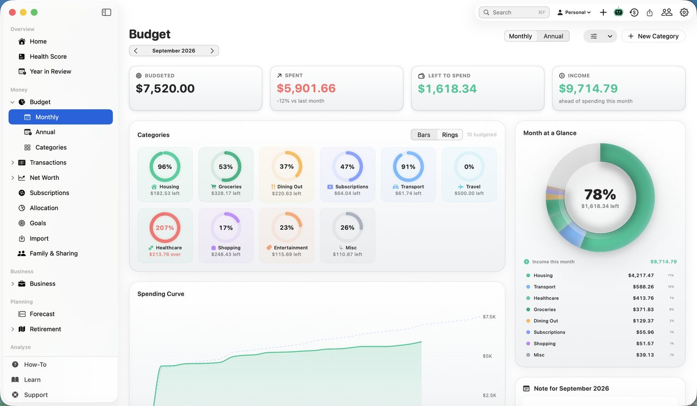
Find anything fast
How do I find one transaction or screen quickly?
- Press ⌘F to open Find Anything.
- Type a merchant, an amount, a category or a screen name.
- Results are grouped, so a transaction, an account and a settings screen matching the same word stay separated.
- Pick a result and the app goes there — searching is a way to navigate, not just to look.
- It also finds glossary terms, so searching "amortization" opens the definition rather than a list to scroll.
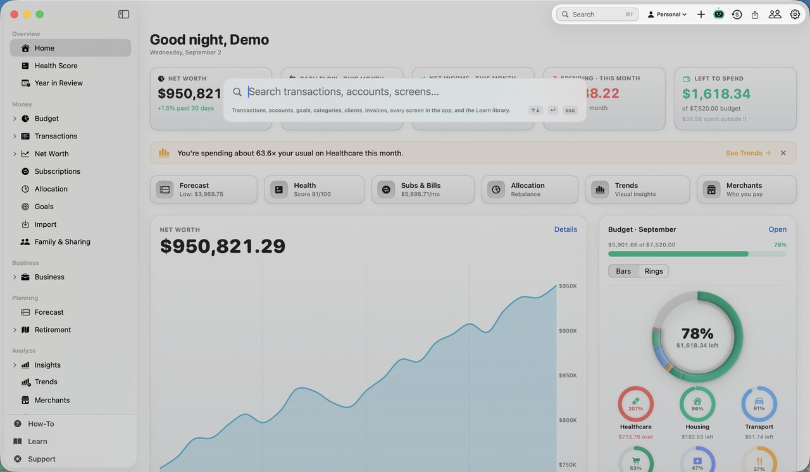
Subscriptions & recurring charges
What am I paying for every month without noticing?
- Open Subscriptions in the sidebar. Nothing to enter — it reads your transaction history and finds charges from the same merchant that repeat on a rhythm.
- It works out the cadence, predicts the next charge, and puts a badge on anything whose price has gone up.
- Repeating is not the same as billing: a weekly grocery run repeats too. The detector measures how STEADY the amount is, so a fixed £11.99 is a subscription and a £40-to-£210 supermarket shop is not.
- Click Track on any of them to turn it into a real recurring bill, which then feeds your Budget and your Forecast.
- The recurring manager underneath is where you edit cadence, amount and reminders once something is tracked.
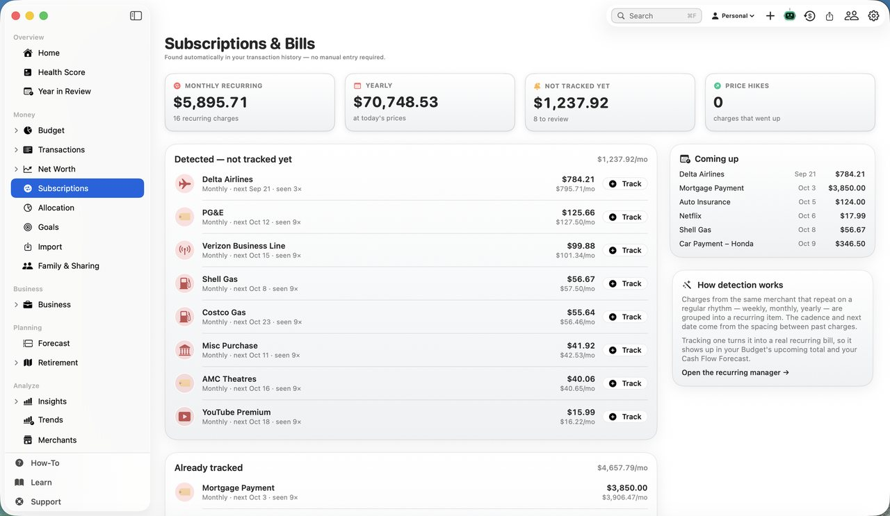
Spending trends over time
Is my spending getting better or worse?
- Open Trends under Analyze. This is the long view — Insights explains this month, Trends compares it with the months before it.
- The spending heatmap is one square per day over the recent weeks. Darker is heavier, and a bad stretch shows up as a block rather than a number.
- Unusual this month lists any category running meaningfully above its own recent average, projected to full-month pace — so early in a month those are estimates.
- Savings rate is income minus expenses as a share of income, tracked month over month. It needs income recorded to show anything.
- Where it goes over time stacks the categories, so you can see composition change even when the total does not.
Everyone you paid
Which shops am I spending the most at?
- Open Merchants under Analyze. Every merchant you have paid, ranked by total — with how often, how much, and which way the trend is going.
- It shows the top 60; search narrows the list rather than paging through it.
- This is the screen for the question budgets cannot answer: not "how much on groceries", but "how much at this one shop".
- A merchant that keeps landing in the wrong category is a rule waiting to be written — Transactions ▸ Rules does it once for every future transaction.
- Click through any merchant to see the transactions behind its total.

Recurring transactions
How do I handle bills that repeat every month?
- Open ☰ → Recurring.
- Tap + (top right) to add one: merchant, amount, category, income vs expense, and the day of the month it’s due.
- The calendar shows every bill and payday for the month, so you can see what’s coming before it lands.
- Optional: turn on Auto-Post in Settings to log them automatically each month. Off by default — you stay in control.

Fin — your money assistant
Can I just ask a question about my money?
- Tap Fin’s face at the top RIGHT of the Home screen.
- Ask anything in plain English — “How am I doing this month?”, “What did I spend on dining last year?”, “Can I afford $300 more in savings?”
- Or tap the microphone and just say it.
- Ask for a chart (“chart income vs spending for 2024 and 2025”) and Fin builds it from your real numbers.
- Fin opens on Insights it worked out already — whether you’re on track, what’s trending over, your biggest one-off. Ask for a month or year report, or let Fin suggest money moves you can apply with a tap.
- It all runs ON YOUR DEVICE with Apple Intelligence — your finances never leave your phone. Siri works too.
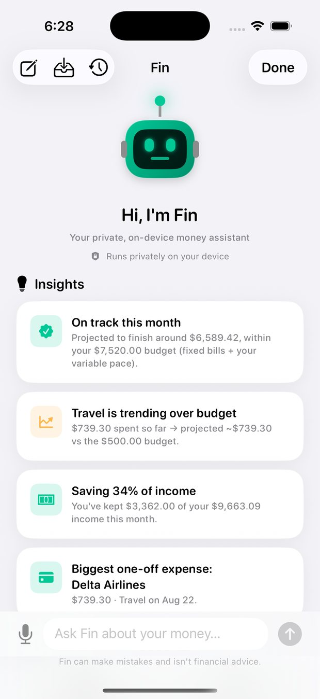
Where your money goes
Where is my money actually going?
- Open ☰ → Spending Insights, or tap “See where your money goes” on Home.
- Switch the range at the top — 1, 3, 6 or 12 months — to see a trend rather than a single month.
- The card leads with the total, your average day, and the same figure last month — then what you’re ON PACE to finish at, so you hear about a bad month while you can still do something about it.
- The 6-month trend bars show whether this month is normal for you. Touch and hold a bar for that month’s total.
- Top Categories and Top Merchants tell you where it actually went, not just how much.
- Keep scrolling for Biggest Movers — what changed most against last month, right in red for more, left in green for less — then Biggest Purchases and Compare Years. The ⓘ on any card explains how its number is worked out.

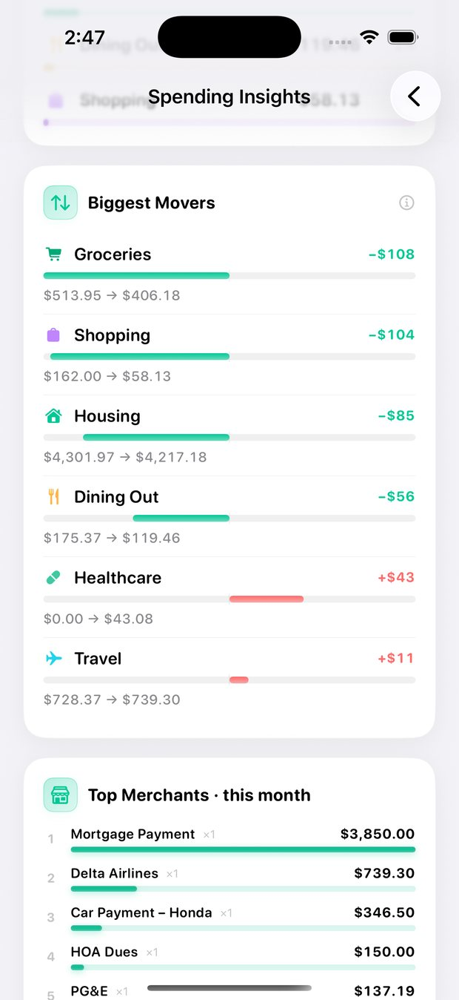
Cover an overspend
I went over in one category — can I move budget across?
- Go over in a category and it turns red on the Budget tab — bar full and past the end, or a ring over 100%.
- A “Cover … from …” chip appears on that row. Tap it.
- The sheet leads with exactly what you’re short.
- It suggests the category with the most genuinely SPARE money — a large budget that’s still going to be spent doesn’t win. Pick a different one if you’d rather; only what’s actually unspent is offered.
- Set the amount — All, Half, or your own — and “After this move” shows both categories’ new budgets before you commit.
- The row then says where the money came from, with an Undo beside it. The move applies to THIS MONTH only — next month goes back to your usual budgets.
- Nothing single has enough? The sheet offers to split it across several categories in one tap. You can also start from the ⌄ menu → Move Money Between Categories, which lists every category, not just the ones already over.
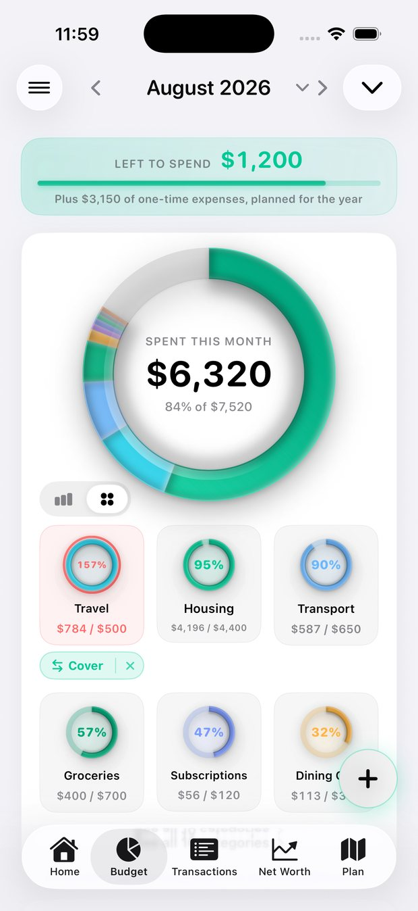
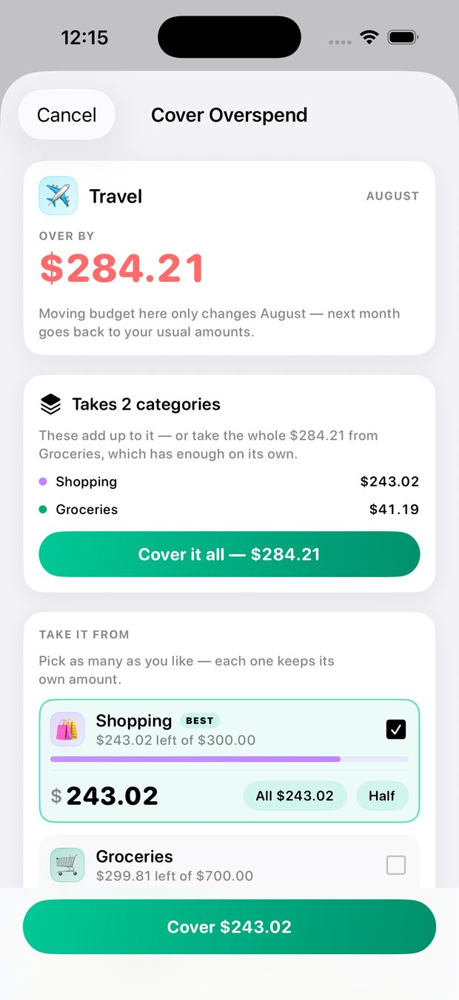
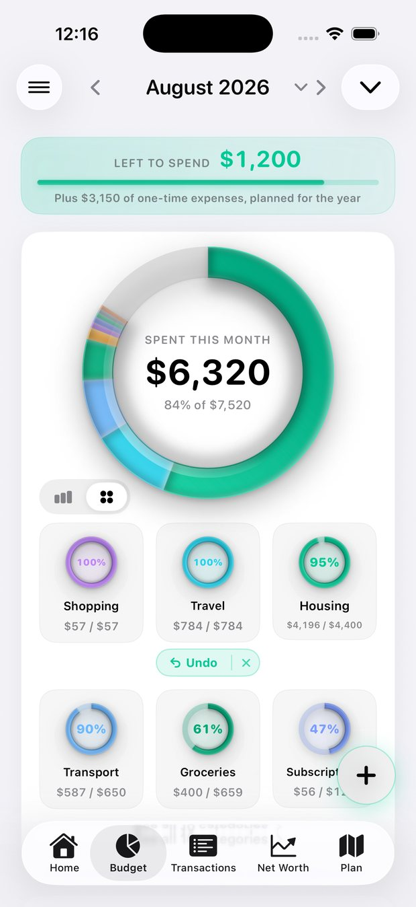
Find anything fast
How do I find one transaction or screen quickly?
- Open ☰ and tap the search field at the top.
- Search transactions by merchant, note or category — typing “housing” finds everything in that category, not just merchants named it.
- It also finds accounts, goals, categories, every screen in the app, and the whole Learn library.
- Tap any result to go straight there.
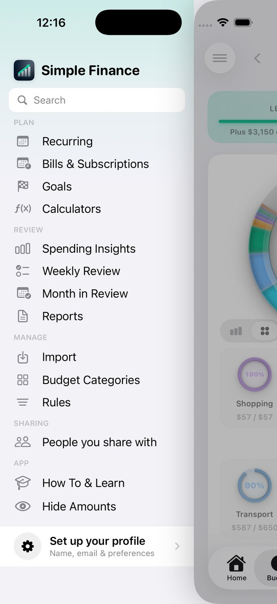
Find your subscriptions
What am I paying for every month without noticing?
- ☰ → Tools → Subscriptions. Nothing to enter — it reads your history and finds charges from the same merchant that repeat on a rhythm.
- It works out the cadence, predicts the next charge, and badges anything whose price has gone up.
- Repeating is not the same as billing: a weekly shop repeats too. The detector measures how STEADY the amount is, so a fixed $11.99 is a subscription and a variable supermarket shop is not.
- Tap Track to turn one into a real recurring bill, which then feeds your Budget.
- This is usually the fastest money the app finds you — people cancel something on this screen more often than on any other.
Planning ahead
One-time expenses
How do I add or log a one-off expense I already paid for, so it doesn't blow up my monthly budget?
- A wedding, a ring, a car, a new roof — money you plan once for the YEAR instead of every month.
- Open Budget ▸ Annual in the sidebar. One-Time Expenses sits below the categories.
- Click Add and name it. ALREADY BOUGHT IT? Switch on "I've already paid it", enter what it cost and the day you paid — one Save logs the purchase and files it in the year's plan, with no estimate to invent.
- PLANNING AHEAD instead? Leave that off and enter what you expect it to cost. Click any row to edit or remove it.
- Either way it counts in the YEAR's plan and never against a monthly budget, so the month you actually pay doesn't go red.
- Paying later, or in pieces? Tag the payment to it when you enter the transaction.
- It still counts in cash flow, net worth and every spending report, because the money really did leave your account.
Goals & debt payoff
How do I set a goal and watch it move?
- Open Goals (⌘6) in the sidebar under Money.
- Add a goal with a target amount and, if it has one, a date.
- Link it to an account and progress tracks your real balance instead of a number you maintain by hand.
- A debt goal works the same way in reverse — the bar fills as the balance comes down.
- Each goal shows what it needs per month to land on time, so a date you can't hit is visible now rather than later.
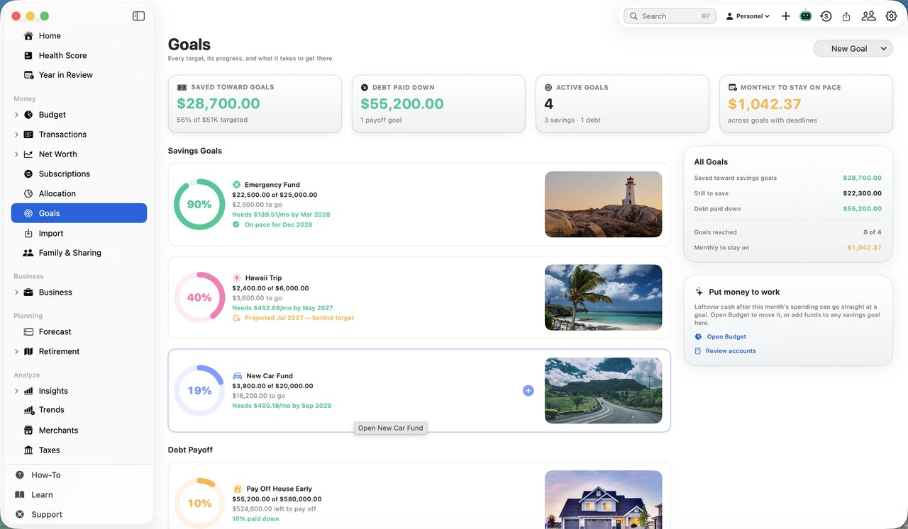
Retirement planning
Can I model retiring early?
- Open Retirement ▸ Setup (⌘5) and enter your age, savings and contributions.
- Retirement ▸ Plan draws the projection; Cash Flow shows the years as income and spending.
- Analysis stress-tests it — what a worse market, a longer life or an earlier finish does to the plan.
- Retirement ▸ Report turns the whole thing into a document you can read end to end or print.
- ⇧⌘P opens the planner in its own window, so you can model against the rest of the app side by side.
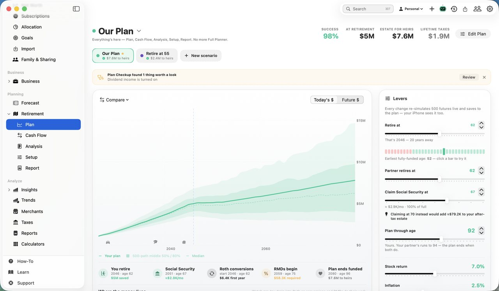
Reports, printing & exporting
How do I share, print or export my numbers?
- Open Reports (⌘9).
- Pick a range — this year, last year, or any year you choose — and the sections you want in it.
- Reports read your historical data too, not just transactions, so a back-filled year isn't blank.
- ⌘P prints whatever screen is in front. A screen that can't print simply ignores it.
- Export writes a file you can keep or send. Your numbers never pass through us to get there.
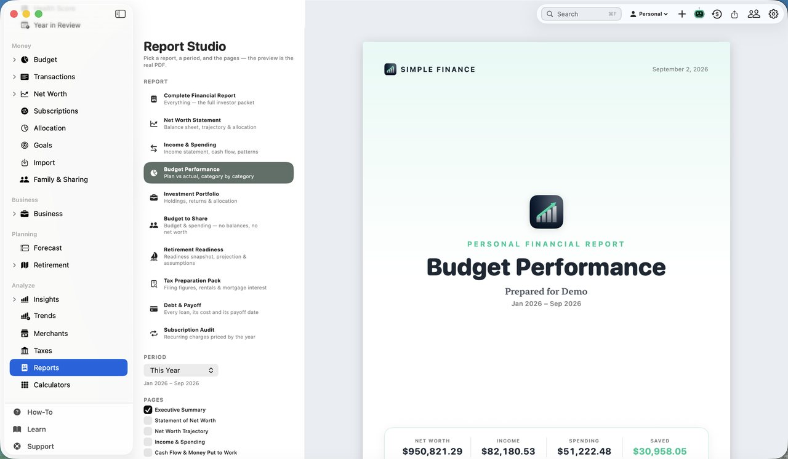
Tools & calculators
Can I model a loan or a payoff?
- Open Calculators in the sidebar, under Analyze.
- Loan and mortgage calculators show what a payment really costs over its life.
- The payoff calculators compare paying extra now against investing it instead.
- Taxes (⌘8) estimates what you'll owe from the income and deductions already in the app.
- Forecast projects your balances forward from your recurring items, so a tight month is visible before it arrives.
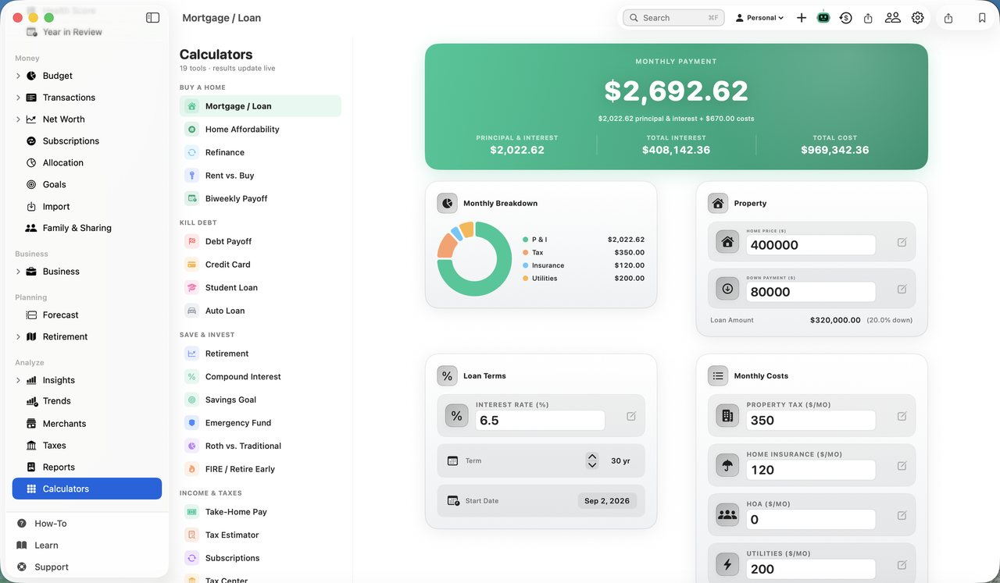
Cash-flow forecast
Will I make it to payday?
- Open Forecast under Planning. It takes today's cash, adds the income due, subtracts the bills due, and draws the balance forward day by day.
- Safe to spend today is the headline: what you can spend now without the projection dipping below your buffer before the horizon.
- Set the safety buffer to the cushion you never want to go under. Safe-to-spend and the negative-balance warning both respect it.
- Lowest point is the day to watch. If it goes red, the fix is usually to move money in or push one bill — the warning says which.
- Include savings accounts decides whether the projection may lean on savings. Leave it off if that money is not really available.
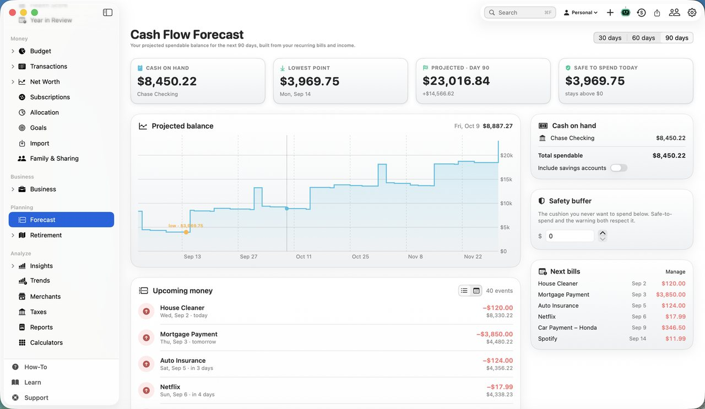
Year in Review
How did the whole year actually go?
- Open Year in Review under Overview. Three views: This Year, Year by Year, and Month over Month.
- This Year is the summary — what came in, what went out, what was kept, and the categories that moved most.
- Year by Year lists every year on record, including ones you back-filled by importing old statements. Click a row to open that year.
- Month over Month puts the twelve months side by side, which is where a seasonal pattern becomes obvious.
- ⌘P prints whatever you are looking at, which is the quickest way to keep a copy at tax time.
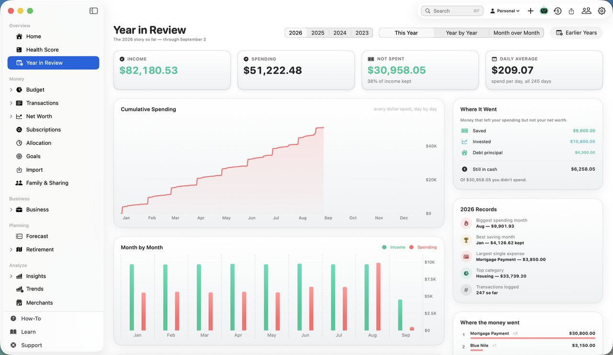
Taxes & deductions
What is this going to cost me in tax?
- Open Taxes (⌘8). Three views: Estimator for this year's bill, Lifetime for the tax your retirement plan projects bracket by bracket, and Deductions for what is claimable.
- The estimator uses the income and the plan already in the app, so it moves when your figures do rather than being a form you re-fill.
- Deductions gathers what the app already knows is deductible — mortgage interest, business expenses, mileage — instead of asking you to remember them in April.
- Reports ▸ Tax Preparation Pack prints the same figures with the rentals and mortgage interest attached, which is the version to hand to a preparer.
- These are estimates from your own numbers, not filing advice.
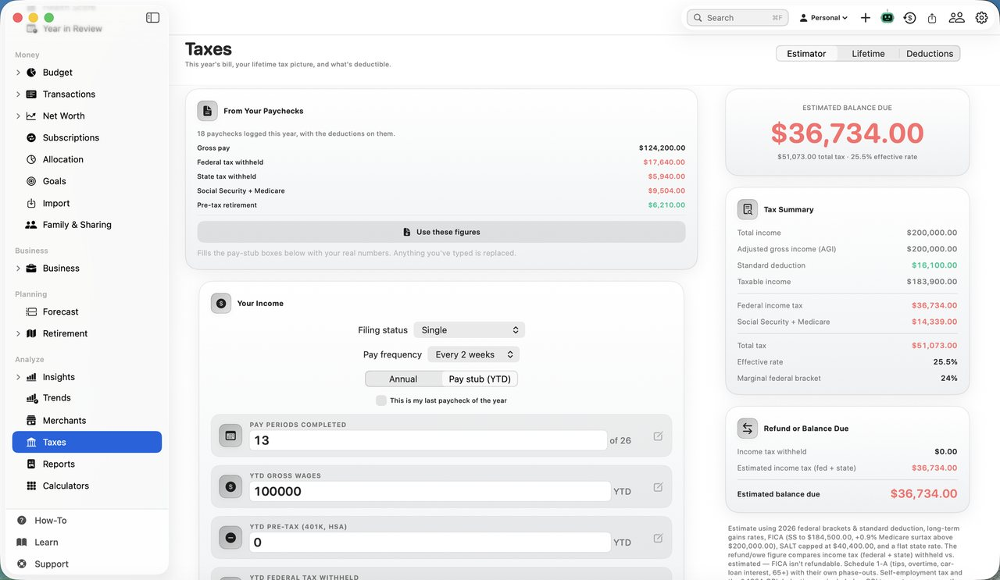
Where your net worth is heading
What does this look like in ten years?
- Open Net Worth ▸ Projection. It carries your current net worth forward using what you save and what your debts do.
- The trajectory is built from your own snapshots, so it gets more honest the longer you have been recording them — and Reconcile is what records them.
- Change the assumptions to see the shape change; the milestone years underneath move with it.
- Include a spouse or partner to project the household rather than one person.
- This is a projection from your figures, not a promise about markets.
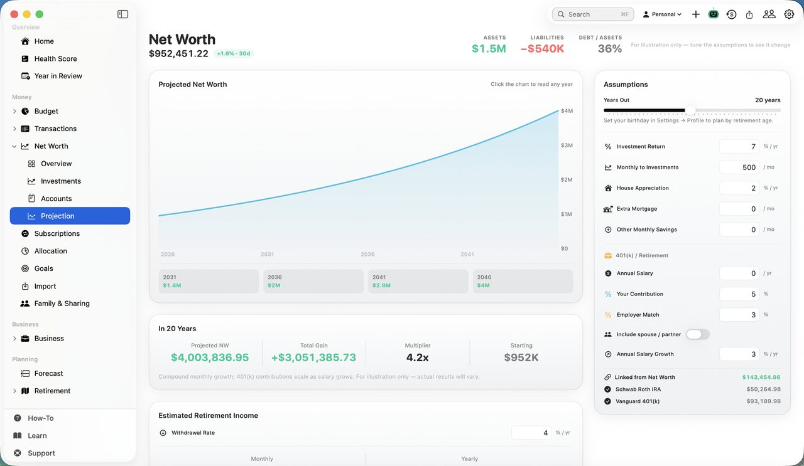
One-time expenses
How do I add or log a one-off expense I already paid for, so it doesn’t blow up my monthly budget?
- A wedding, a ring, a car, a new roof — money you plan once for the YEAR instead of every month.
- Budget tab → tap the month in the title bar → Annual. Scroll to One-Time Expenses and tap “Add a One-Time Expense”.
- ALREADY BOUGHT IT? Turn on “I’ve already paid it”, then just enter what it cost and the day you paid. One Save logs the purchase AND files it in the year’s plan — no estimate to invent.
- PLANNING AHEAD instead? Leave that off and enter what you expect it to cost, plus the month it lands in if you know it.
- Either way it counts in the YEAR’s plan and never against a monthly budget, so the month you actually pay doesn’t turn red.
- Paying for it later, or in pieces? On an expense, set One-Time Expense on the transaction to point it at the plan — or tap “New one-time expense…” right there and create one without leaving the form.
- It still counts everywhere else — cash flow, net worth, spending reports and year to date all include it, because the money really did leave your account.
Goals & debt payoff
How do I set a goal and watch it move?
- On Home, tap + on the Goals card — or open ☰ → Goals.
- Save Up: set a target, then link transfers to it to build progress.
- Pay Down — the second tab at the top: link a mortgage, auto loan or other debt account and progress tracks itself as the balance drops.
- Pay extra principal: add a Transfer, set its type to “Extra Principal”, and link it to the goal.
- Tap any goal for its own screen — progress, pace, projected finish, and a photo if you want one.
- Tap any goal for its own screen — what’s saved, what’s left, what it needs per month, and when it lands at the pace you’re actually going. Add a photo and it becomes the header.
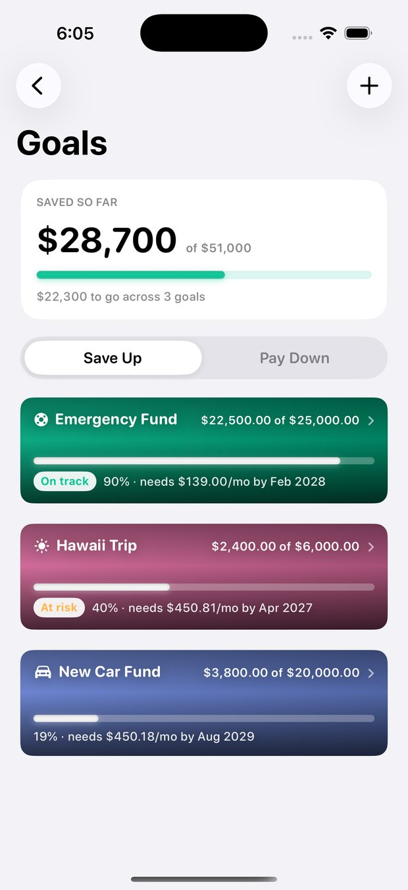
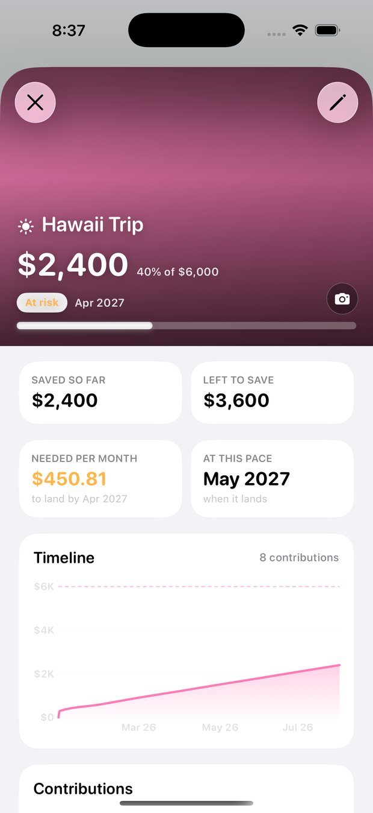
Reports & exporting
How do I share or export my numbers?
- Open ☰ → Reports for the Report Studio.
- Pick a report: Complete Financial Report, Net Worth Statement, Income & Spending, Budget Performance, Investment Portfolio, Budget to Share, Retirement Readiness, Tax Preparation Pack, Debt & Payoff or Subscription Audit.
- Choose a period, then tick the pages you want. Pages with no data for that period are dimmed and left out.
- SENDING IT TO SOMEONE? Use “Budget to Share”, or the “Hide everything that shows balances” button — the cover prints your net worth otherwise.
- Preview every page, then export as a PDF. Settings → Full Backup saves everything separately.
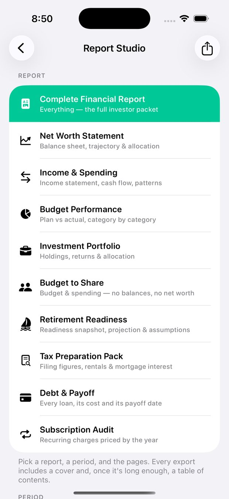
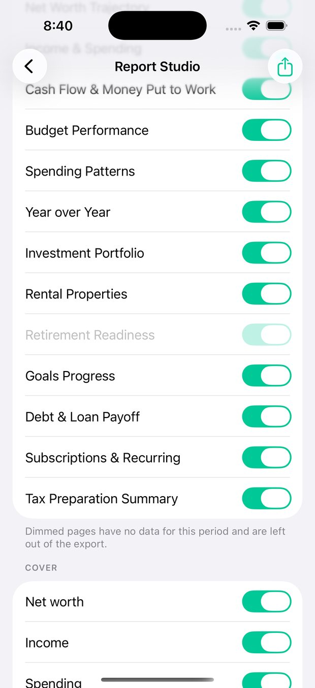
Tools & calculators
Can I model a loan, a payoff or retiring early?
- Open ☰ → Calculators. Eighteen of them, grouped by the job: Buy a Home, Kill Debt, Save & Invest, Income & Spending.
- Mortgage, refinance, rent vs buy, debt payoff, credit card, student loan, auto, compound interest, FIRE, Roth vs Traditional, take-home pay and more.
- Every one leads with the answer and charts it, so you can see the shape and not just the number.
- Save any calculation to revisit or tweak it later.
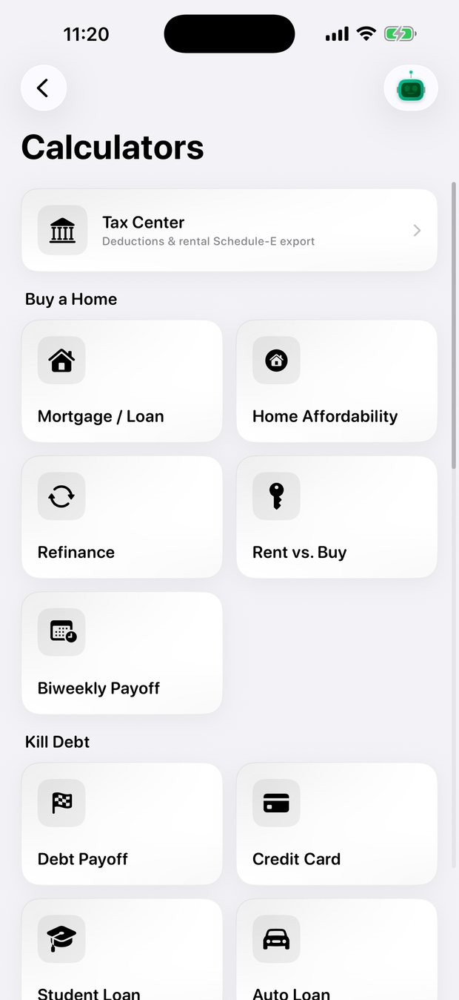
Taxes & deductions
What is this going to cost me in tax?
- ☰ → Tools. Two of them: Tax Estimator works out this year's bill, and Tax Center tracks what is deductible.
- The estimator uses the income and the plan already in the app, so it moves when your figures do rather than being a form you re-fill.
- Deductions gathers what the app already knows is claimable — mortgage interest, business expenses, mileage — instead of asking you to remember them in April.
- Reports → Tax Preparation Pack prints the same figures with rentals and mortgage interest attached; that is the version to hand a preparer.
- These are estimates from your own numbers, not filing advice.
What you own
Investments & retirement accounts
How do I track my 401(k) and brokerage?
- Open Net Worth ▸ Investments (⌘4).
- Add each holding with its shares and cost basis; prices refresh from the market.
- A 401(k) or IRA is an account with holdings inside it — add the account first, then what's in it.
- Allocation shows how your money is split across asset types, which is the number that actually drives risk.
- Net Worth ▸ Projection grows the whole picture forward at rates you set per bucket.
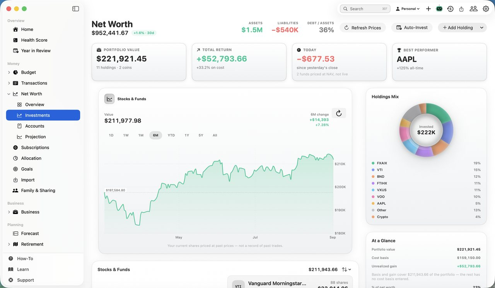
Real estate & rentals
How do I track a rental property?
- Open Net Worth ▸ Accounts and add the property as an asset.
- Add its mortgage as a liability — net worth counts both, so the equity is what's left.
- For a rental, log the rent as income and the costs against it, so the property's own profit is separate from your household's.
- Update the value when you have a real number. The Accounts view flags balances that have gone stale.

Mortgages & loans
How do I pay a mortgage down faster?
- Add the loan under Net Worth ▸ Accounts with its balance, rate and payment.
- The amortisation view splits each payment into interest and principal, which is where the cost actually shows.
- Add an extra principal amount to see the payoff date and total interest move.
- Extra payments you've already made are kept as history, so the projection matches what you really did.
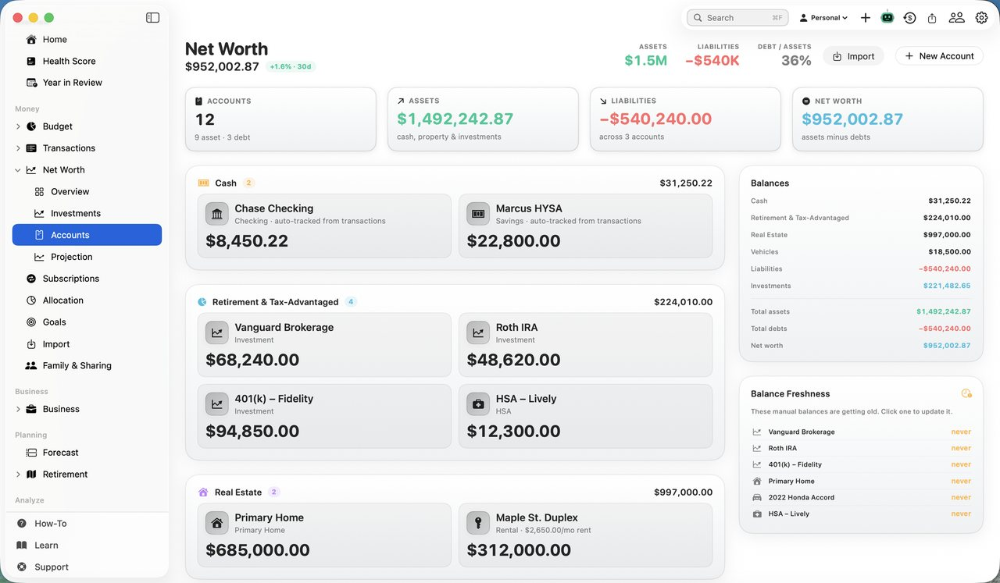
Asset allocation & rebalancing
Is my portfolio still the shape I chose?
- Open Allocation in the sidebar. The donut is what you hold today; the Target mix sliders are what you want to hold.
- Set your target mix — US stocks, international, bonds, real estate, cash, crypto. The total has to reach 100%, and the card tells you when it does.
- Current vs target shows the drift per class, and the summary at the top names the biggest one. To rebalance is the total of the moves needed.
- The portfolio map sizes every holding by value and colors it by class, which is the fastest way to see a position that has quietly grown too large.
- Tickers are classified automatically. Anything it gets wrong can be overridden per holding, and the mix updates immediately. Include cash accounts decides whether cash counts as part of the portfolio.
- This is arithmetic against a target you set, not investment advice.
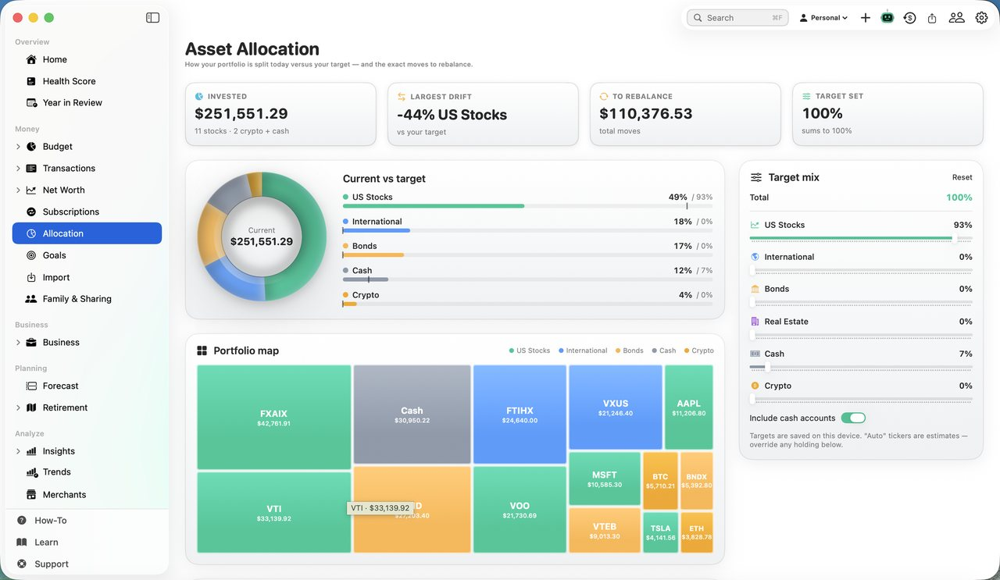
Make it all agree with the bank
My balance here doesn't match my bank. Now what?
- Open Net Worth and click Reconcile in the toolbar. One sheet, every account, with your bank tabs open beside it.
- Type what each account really says today. Blank rows are left alone, so you can do the three that matter and ignore the rest.
- The difference is written as a balance adjustment rather than by rewriting history — your past transactions stay exactly as they were.
- Investments reconcile by SHARE COUNT, not value. A correction is added at your average cost so the return you have earned does not move.
- Reconcile All applies the lot and records a net-worth snapshot at the same time, which is what puts the point on your trajectory chart.
- Doing this once a month is the whole maintenance routine for an app that is not linked to a bank.
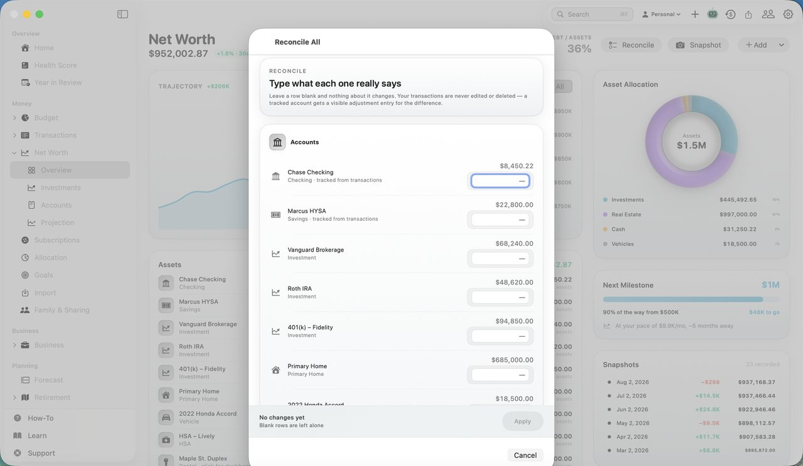
Net worth, investments & retirement
How do I track my net worth, 401(k) and brokerage?
- The Net Worth tab opens on Overview: everything you own against everything you owe, with this month and the year so far underneath. The history chart below runs 3M to All, or a range you pick.
- The Stocks segment is the investing half. One card totals every investment account and what it has returned; the refresh, history and + buttons sit on it.
- Add an account — Brokerage, Roth or Traditional IRA, SEP/SIMPLE, 401(k), 403(b), 457, TSP, HSA or 529 — then add holdings by ticker (AAPL, VTI, VOO) and share count. Give an account its own icon and color if you like.
- Each holding row shows a chart of today’s session beside its figure. The header pill switches what that figure MEANS — market value, today’s change, or total return — for every list at once, and it remembers.
- Tap a holding for its own screen: a real chart from a day to five years, your cost basis and lots, dividends, and pre-market or after-hours prices when the market is shut.
- Stocks & Funds charts the whole portfolio over the same ranges. It prices your CURRENT shares at past prices — it is what you hold, valued back through time, not a record of past trades.
- On a retirement or HSA account, enter what you’ve contributed this year and see it against the IRS limit. Auto-invest plans log recurring buys against the account they land in.
- Crypto works the same way in its own section, priced per coin. A mutual fund has no intraday price at all, so its row says “at last NAV” rather than pretending the figure is today’s.
- The Watchlist follows a ticker you don’t own — those never count toward your net worth.
- “vs Market” puts your portfolio against the S&P 500, the Dow and the NASDAQ over a week to a year — so a good month is a good month RELATIVE to something.
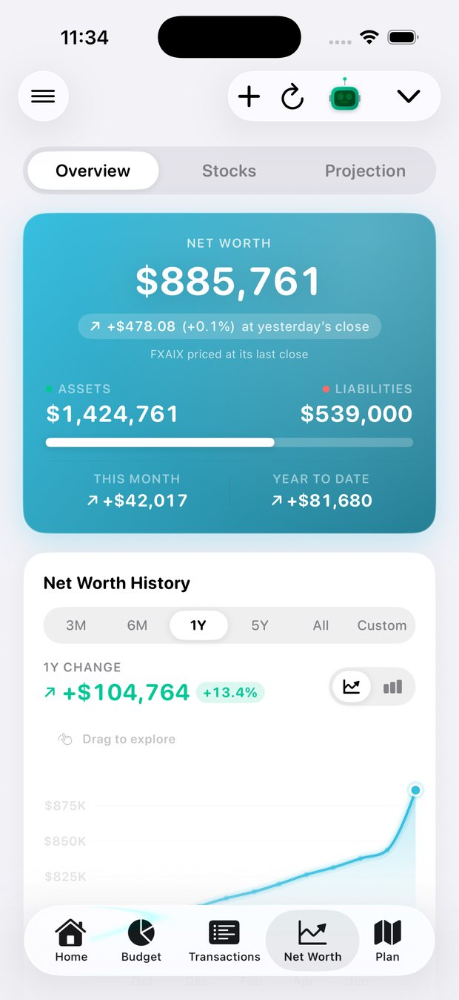
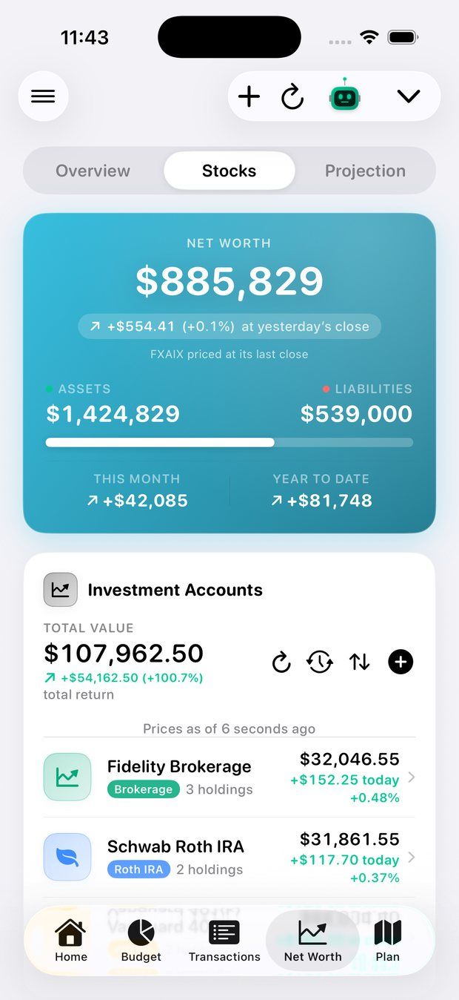
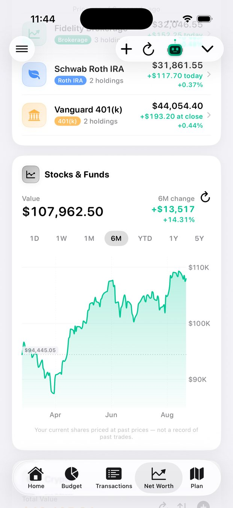
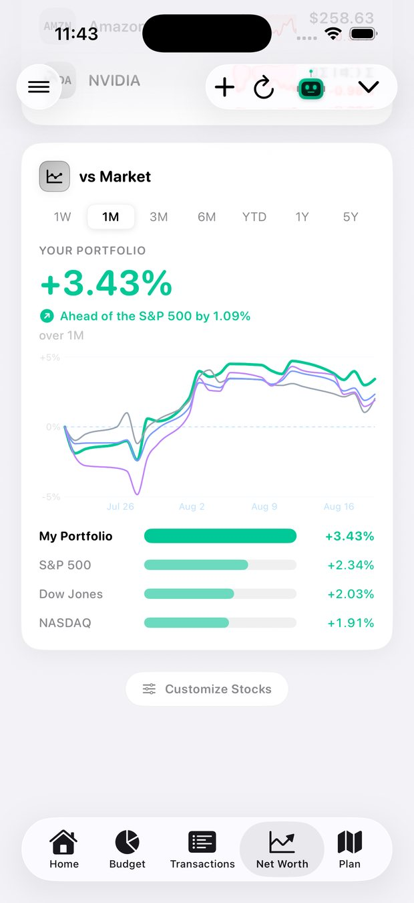
Real estate & rentals
How do I track a rental property?
- On the Net Worth tab, tap + → Add Account → Rental Property (residential, multi-family, short-term, commercial or land).
- Enter the value, monthly rent, operating expenses and attach a mortgage — equity is worked out for you.
- Tap the property for full analytics: cash flow, cap rate, cash-on-cash, the 1% rule, total ROI, appreciation and tax depreciation.
- Optional: auto value updates appreciate (or depreciate) at a rate you set — or update by hand any time.
- Tag transactions to a property to track its real income and expenses for the year.
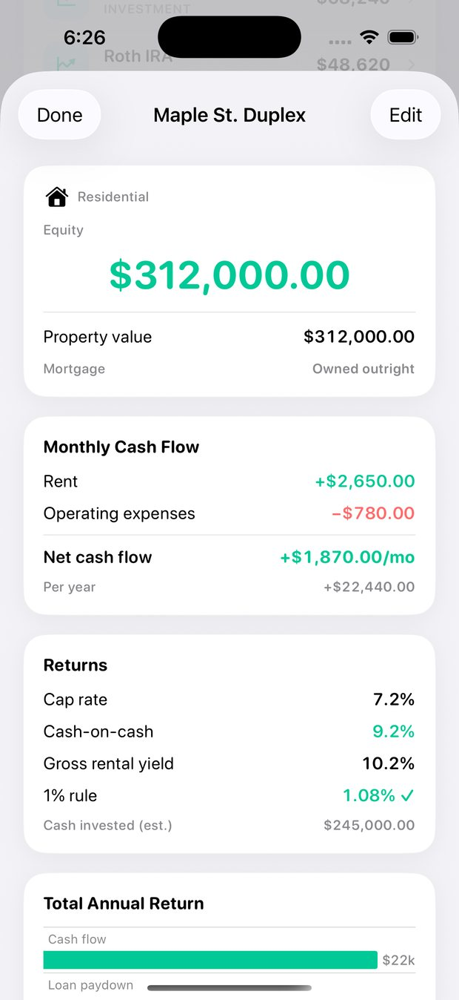
Mortgages & loans
How do I track a mortgage and pay it down faster?
- On the Net Worth tab, tap + and add a liability — Mortgage, Auto, Credit Card, HELOC, Personal, Medical, Tax, Business or other.
- For a mortgage, tap it and choose “Set Up Loan”: interest rate, term, monthly payment, property tax, insurance, PMI and any extra principal.
- You get a full payment breakdown — principal, interest, tax, insurance — plus amortisation and payoff projections.
- Auto-Pay applies the scheduled principal each month for you. Interest and principal recalculate from the live balance, so an extra payment lowers next month’s interest.
- Extra principal you pay is recorded against the loan AND the account, so the balance and the history agree.
- The Debt & Loan Payoff report page lists every loan, its cost and when it clears.
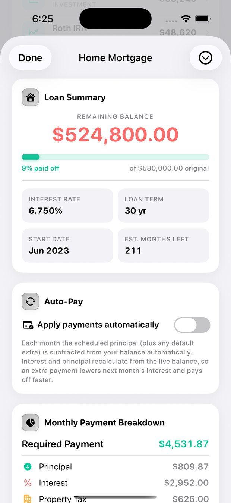
Make it all agree with the bank
My balance here doesn't match my bank. Now what?
- Net Worth → Reconcile. One screen, every account, with your bank app open beside it.
- Type what each account really says today. Blank rows are left alone, so you can do the three that matter and ignore the rest.
- The difference is written as a balance adjustment rather than by rewriting history — your past transactions stay exactly as they were.
- Investments reconcile by SHARE COUNT, not value. A correction is added at your average cost so the return you have earned does not move.
- Reconcile All applies the lot and records a net-worth snapshot at the same time, which is what puts the point on your trajectory chart. Once a month is the whole maintenance routine.
Sharing & safety
Sync across your devices
How do I use this on my Mac and iPhone together?
- Sign your Mac and your iPhone into the same Apple ID with iCloud on.
- Turn on iCloud Sync in Settings (⌘,) on both.
- Accounts, budgets, goals and plans mirror through your own private iCloud — usually within a minute of a change.
- It's your iCloud, not our server. We never hold your data.
- A backup file can be written to iCloud Drive as a second copy, separate from sync.
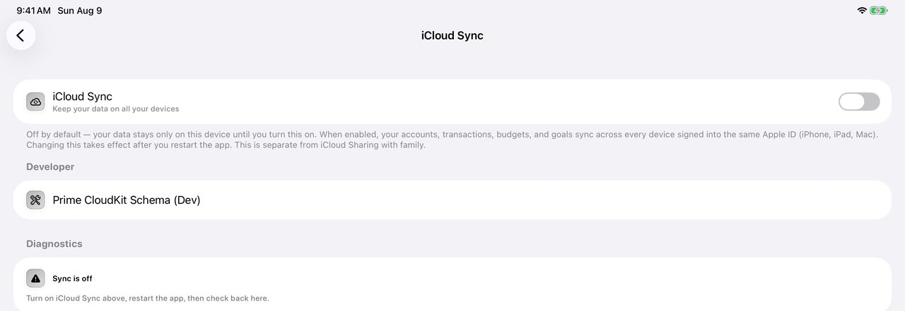
Compare with friends
Can I see how I compare with anyone?
- Open Friends in the sidebar. It compares a few numbers you choose — savings rate, a utility bill, the month's income — with people you invite.
- Nothing is shared until you switch it on, and you pick which numbers individually. Everyone chooses their own.
- It works between Apple devices signed in to iCloud with Simple Finance installed. There is no Android or web version, so an invitation only reaches people who have the app.
- Balances and transactions are never part of it — only the specific figures you turned on.
- Turn any of them back off and it stops being shared straight away.
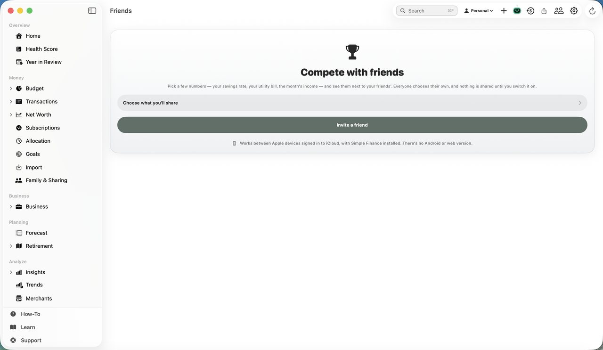
Sync across your devices
How do I use this on my iPad and Mac too?
- Settings → iCloud Sync. It is OFF by default — your data stays on this device until you turn it on.
- Once on, accounts, transactions, budgets and goals sync through your own private iCloud to every device on your Apple ID.
- There’s a Mac app too, and it’s the same purchase — not a separate one to buy. Search the Mac App Store for Simple Finance, sign in with the same Apple Account, and turn this on. Everything you’ve entered on your phone is already there.
- Changing this takes effect after you restart the app. It’s your private database — nothing is shared with us, and it’s separate from iCloud Sharing with family.
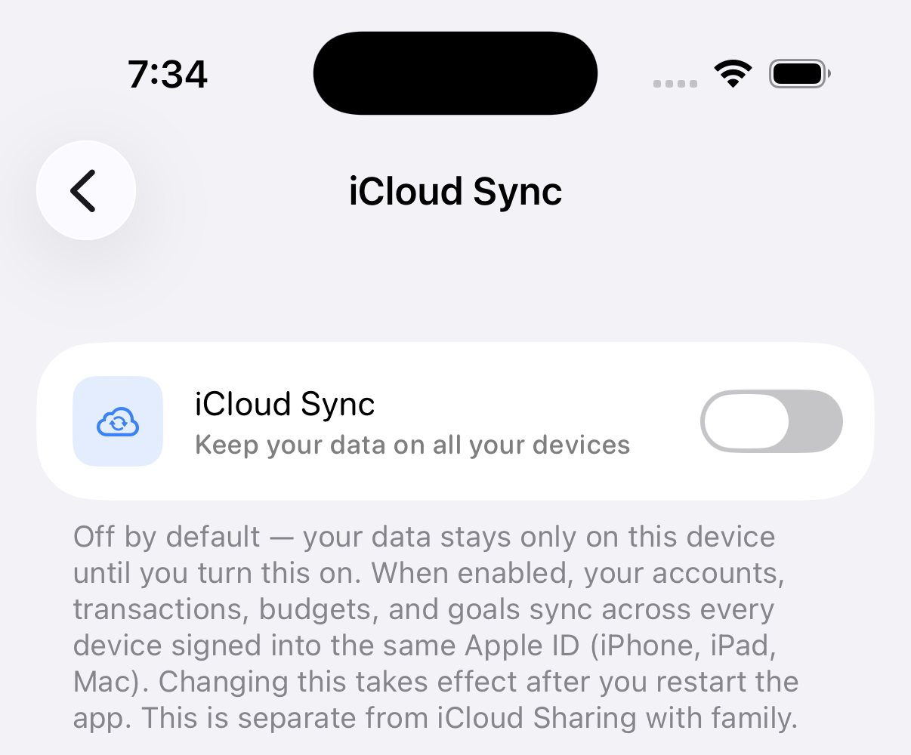
Who sees what
How do I control who can see what, and change what one person sees?
- The two-people button at the top of Home opens People — everyone you share with, in one list. Each row names the access level, and the two small chips underneath say which way it flows: what comes IN to you, and what goes OUT to them.
- Tap anyone to open just that relationship. Everything about them is on that one screen — there is no second place to go.
- Your partner opens your household: what each of you spent this month, what either of you bought recently, Notes, what you’re keeping back, and your colors and pictures.
- Family and friends open a two-sided screen instead. Their tab is the card they sent you; the You tab is exactly what they see of you, built from your real numbers rather than described.
- The You tab is also where you change it — net worth, income, the accounts behind it, investments, goals, bills, a six-month trend. Or narrow it further and pick the individual categories and bills, one at a time.
- Switching something off removes it from their device. It isn’t left out of the next update — it goes.
- Everyone in a household carries their own color and picture, and it is the same color in every place a person appears — the dot on a transaction, the feed, the split bar. After a day of it you stop reading names.
- “Who spent what” on the Sharing screen splits the month between you, and the feed underneath lists what either of you added recently, each row saying who added it.
- On Transactions you can filter to Mine, Theirs or Joint. “Joint” means a shared expense, not “unknown” — with one exception: rows entered before the app started recording who added them have no author, and those say Joint too.
- Want to try it first? Settings → Privacy & Security → Demo Mode gives you sample people and live switches. Nothing you touch in there reaches a real share.
Privacy, security & demo
How do I turn on Face ID, or hide amounts when someone picks up my phone?
- Your data lives on your device and in your own private iCloud — never on our servers.
- Settings → Privacy & Security: require Face ID to open the whole app, or just to view Net Worth — one or the other, and turning either off needs Face ID as well.
- Hide Sensitive Amounts blurs money on screen so you can hand your phone to someone; “What to Hide” decides how much. Revealing needs Face ID, and the eye button on Home toggles it in one tap.
- Hide When App Is Backgrounded covers the app in the app switcher, so a screenshot of your task list never shows balances. Reports and exports always contain the real numbers.
- Showing the app to someone? Demo Mode swaps in realistic sample data — your real numbers stay hidden and untouched, and “Require Face ID to Exit Demo” stops them switching back.
Make it yours
Two windows at once
Can I have two screens open side by side?
- ⇧⌘B opens Budget in its own window; ⇧⌘P opens the Retirement Planner in its own.
- Either can sit beside the main window, so you can categorize the Ledger while watching the rings move.
- Each window keeps its own screen — changing one doesn't drag the other along with it.
- Close an extra window and the main one carries on as it was.
Track a business
How do I track a business in here too?
- Turn on business tracking in Settings (⌘,) and a Business section appears in the sidebar.
- The Mac is the business hub: clients, work log, invoices, receivables, crew, job profit and tax summary all live here.
- Log work as you go; batch it into invoices at month end from the Month-End Run.
- ⌘0 jumps to the Business Dashboard once business tracking is on.
- Business money is kept out of your personal budgets and net worth — the two are scoped separately on purpose.
Ask for a feature
Can I ask for something the app doesn't do?
- Open Support at the bottom of the sidebar, and pick Suggest a feature.
- Say what you were trying to do — that is more useful than a feature name, because it leaves room for a better answer than the one you had in mind.
- Send it from here rather than by email: the message keeps its thread, and the reply comes back into Your messages inside the app.
- Diagnostics is there if something is broken — versions, sync state and record counts, with no transaction detail in it.
- This app is built by one person, and a specific request from someone using it daily is the single best thing you can send.
Auto-categorization rules
Can it stop asking me to categorize the same shop?
- Open Transactions ▸ Rules. A rule matches a merchant and files the transaction for you, so the same shop never has to be categorized twice.
- Match by contains, starts with or is exactly — contains is right nearly always, because card statements append store numbers and cities.
- New transactions are filed as they arrive. "Apply to Uncategorized" runs every enabled rule over transactions that have no category yet — which is how a new rule catches up with an import.
- It deliberately leaves anything you have already categorized alone. A rule should never overwrite a decision you made by hand.
- The switch on a rule enables and disables it without deleting it, which is how you test whether a rule is the thing causing a surprise.
- Rules are the cure for the most common import complaint: everything landed in the wrong category. Fix it once here instead of row by row.
Customize your dashboard
Can I change what’s on my home screen?
- On Home, scroll to the bottom and tap “Customize Dashboard”.
- Drag the handle to reorder a section, or tap − to hide it. The header at the top always stays put.
- “Add a Widget” below has the ones you’re not showing — Left to Spend, Budget Rings, Money Flow and more. Tap + to put one on.
- Your Home screen, your order. It doesn’t change anyone else’s in a shared household.
Notifications & smart alerts
How do I get told before something goes wrong?
- Settings → Notifications, then tap “Enable Notifications” to allow them.
- Budget alerts fire the moment a category crosses your threshold, and again if you go over.
- Bill reminders fire a chosen number of days before each recurring expense is due.
- Goal Milestones cheer you on at 50%, 75% and when you get there. Weekly Fin Check-In sends Fin’s top insight on Sunday mornings.
- Smart Money Alerts add optional nudges: cash-flow warnings near month-end, leftover cash worth saving, unusual spending in a category, and large purchases.
- Everything is opt-in and each alert is sent once. “Send a Test Notification” shows you what one looks like.
Make it yours
Can I change the colors and categories?
- Settings → Appearance: pick an accent color, or any custom color, to re-tint the app. Green is the default.
- Choose Light, Dark or System, and set your display currency — it changes how amounts are shown and never converts what you stored. “Show whole dollars” rounds the display; you can still enter cents.
- App Icon swaps the home-screen icon: Classic is the bars-and-trend mark, Ring echoes the planner’s chance-of-success dial.
- Give each budget category its own color and icon — it flows through to charts, rings, reports and widgets.
- Income green and overspend red never change, whatever accent you pick, so a color always means the same thing.
- Add a widget: long-press your iPhone Home Screen → + → Simple Finance, then pick what it shows.
Track a business
How do I track a business in here too?
- Business tracking is OFF until you ask for it — nothing about the app changes for people who don't run one.
- Settings → Business, then turn on “Track a business separately”. A Business row appears in the ☰ panel.
- Add your business: a name, a type (sole trader, LLC, S-corp) and, if you invoice, an address and logo.
- A Personal / Business switch appears in the toolbar. Everything — budgets, reports, net worth — filters to whichever side you're on.
- Tag transactions to the business as you go, or bulk-assign later. Deductible categories map to Schedule C lines.
- Once it's on, a full Business guide appears inside the Business screen, covering invoices, mileage, deductions and the tax summary.
Ask for a feature
Can I ask for something the app doesn't do?
- ☰ → Help & Support → Suggest a feature.
- Say what you were TRYING TO DO, not just the feature name — “I wanted to see how much I spent at one shop this year” is more useful than “add merchant reports”, because it might already be possible.
- Tap one of the starters if the blank box is the hard part. They’re just first sentences; edit freely.
- It sends from inside the app, and the reply lands in Your messages on the same screen. Nothing about your finances is attached.
- A real person reads them, and a good number of them ship.
Stop categorizing the same shop
Can it stop asking me to categorize the same shop?
- ☰ → Rules. A rule matches a merchant and files the transaction for you.
- Match by contains, starts with or is exactly — contains is right nearly always, because card statements append store numbers and cities.
- New transactions are filed as they arrive. “Apply to Uncategorized” runs every enabled rule over transactions that have no category yet — which is how a new rule catches up with an import. Anything you have already categorized is left alone.
- The switch on a rule turns it off without deleting it, which is how you test whether a rule is causing a surprise.
- Rules are the cure for the most common import complaint: everything landed in the wrong category. Fix it once here instead of row by row.